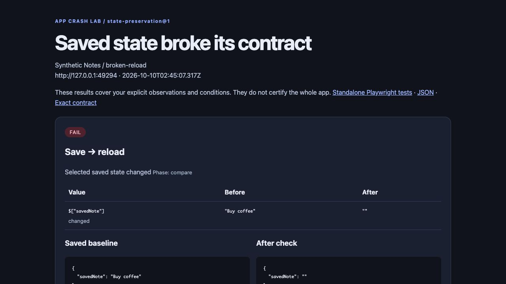

APP CRASH LAB · LOCAL OSS · v0.3.0
Your app says “Saved.”
Does the data survive
the next mistake?
Give one working save flow two extra checks: reload the page, then reject an invalid update. Keep the exact value that changed and a Playwright test to rerun after fixing it.
Run the demo → Check your app GitHub
Node 22+ and Playwright/Chromium. No runtime LLM, account or API key. MIT license.
33 seconds: a save disappears after reload, a rejected edit corrupts a value, then the fixed fixture preserves it. Recorded from the bundled examples. Recording and replay steps.Same save. Three versions. Different outcomes.
Actual browser test results from deliberately broken synthetic fixtures. The defects are authored controls, not newly discovered production bugs.
| Fixture | Reload | Rejected update |
|---|
| broken-reload | FAIL | PASS |
| broken-reject | PASS | FAIL |
| fixed | PASS | PASS |
See what disappeared.

The report shows baseline and observed values, separate rejection confirmation, screenshots, traces and a standalone Playwright spec.
Try it with two commands
Node 22+ and npm required. Run this in an empty folder. The first command installs Chromium; the second fetches the pinned package from our GitHub release and runs three synthetic fixtures. No cloning, account or API key.
npx --yes --package=@playwright/test@1.64.0 playwright install chromium
npx --yes --package=https://github.com/aichance/business-ai-recipes/releases/download/app-crash-lab-v0.3.0/aichance-app-crash-lab-0.3.0.tgz app-crash-lab demo
Open the absolute index.html path printed in your terminal. Reports stay under .crash-lab/ in your current folder. The demo server stops automatically. Initial dependency/browser downloads need internet and disk space; Linux may need browser system libraries too.
Expected result: one reload failure, one rejected-update failure, and two passing checks for the fixed fixture. These are seeded defects, not a test of your own app.
Then test your app: save the notes contract as my-app.json, set your local URL, route, save steps, saved values and rejection signal, then run:
npx --yes --package=https://github.com/aichance/business-ai-recipes/releases/download/app-crash-lab-v0.3.0/aichance-app-crash-lab-0.3.0.tgz app-crash-lab run my-app.json
Use a disposable local instance and synthetic records. The setup guide includes a prompt your coding agent can use to build the config, supported observations, and standalone test rerun instructions. Version 0.3 also supports an exact native alert() rejection message.
Prefer the source? Download the 0.3.0 source ZIP, extract it, then run npm ci --ignore-scripts, npx playwright install chromium and npm run demo inside that folder. Release and checksums.
Tested beyond the bundled notes app
The same runner also checked a server-backed inventory fixture and an unchanged local build of Glypha. Glypha retained its saved scene and ETag after reload and a 422-rejected update. Its adapter adds configuration, not app-specific runner code.
Glypha is a passing control, not a bug discovery or evidence of author adoption. Checks cover selected values and explicit expectations; a URL alone does not define correct behavior. Cross-origin services, service workers, power loss and multi-user races are outside this first version.
What happened on your app?
Share your result or the part that made setup difficult. Include the framework, which checks ran and a sanitized result. Don't include private records or credentials.
Built and operated by aichance with AI assistance and a human owner. Results above come from local runs on 2026-10-10. Independent third-party adoption is not claimed.